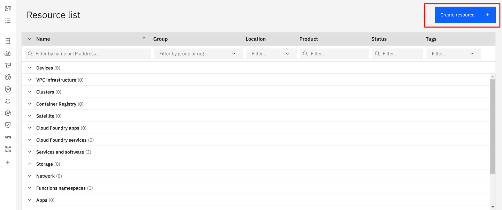
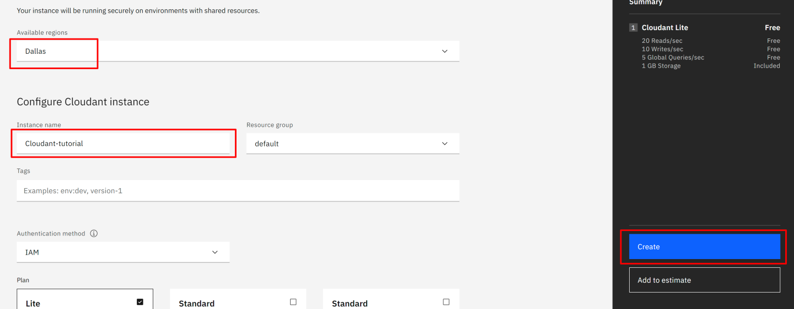
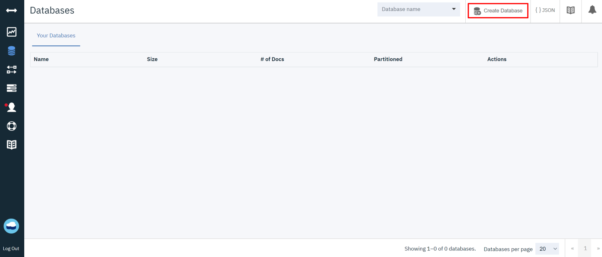
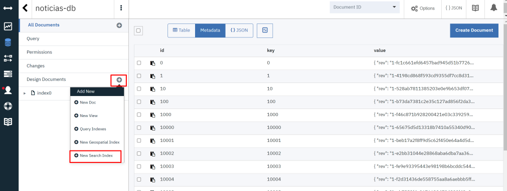
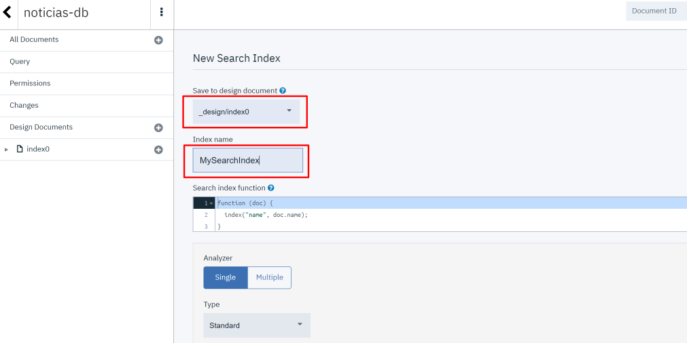
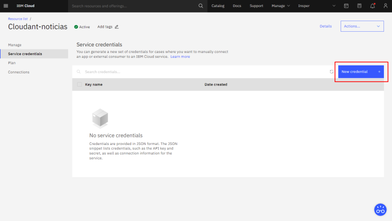
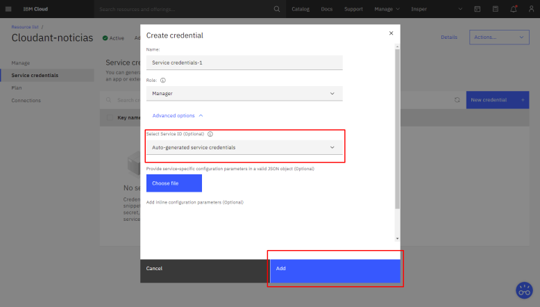

Cloudant
O que é o Cloudant
IBM cloudant é um serviço de armazenamento de dados em formato JSON na nuvem que funciona de maneira escalável e distribuída.
Criando uma instância do Cloudant
- No Dashboard do IBM Cloud, clique em
Create Resource - Selecione o Cloudant

- Escolha uma localização (ou deixe a padrão)
- Instance name: Cloudant-noticias
- Clique em
Create

Criando um banco de dados
- Clique em
Create Database - Database-name: noticias-db

Adicionando documentos na base de dados
O dataset escolhido para este tutorial é o News of the Brazilian Newspaper que contém mais de 160 mil notícias da Folha de S. Paulo entre o período de Janeiro de 2015 até Setembro de 2017. Faça o download e coloque o arquivo CSV na pasta scripts.
No arquivo Cloudant.ipynb coloque as chaves da sua instância, o id do modelo salvo anteriormente e rode as celulas.
O script irá criar na pasta dados um arquivo JSON para cada notícia analisada.
Note
Disponibilizamos 100 arquivos na pasta dados para você verificar o seu modelo.
Importante
Para utilizar o NLU Lite, você precisará recriar o modelo e subir os arquivos de maneira particionada, até atingir o limite e repetir o mesmo passo até finalizar. Com um plano plus é possível realizar esta operação em apenas uma sessão.)
Criando uma Search Index
Search Index são ferramentas que permitem realizar buscas em uma base de dados. Elas utilizam um ou mais campos da sua base para:
- Rodar Queries
- Encontrar documentos a partir de um contexto
- Trabalhar com grupos ou pesquisas de localizações.
Neste tutorial está sendo uzado uma Search Index para encontrar os enrichments criados pelo NLU nos arquivos da base de dados. Com a Search Index é possível retornar para o servidor, mandando as respostas que irão para o Assistante e serão visualizadas pelo usuário.
- Dentro do database criado noticias-db clique na aba
Design Documents>New Search Index
 - Selecione o seu documento e dê um nome para a sua search index 
Na parte da function, coloque o que deseja retornar. No caso deste projeto, retornamos o texto, título, data, link, classificação, categoria e enriquecimentos.
function (doc) {
index("default", doc.text + ' ' + doc.title);
if (doc.text) {
index("text", doc.text, {"store": true, "facet": false});
}
if (doc.title) {
index("title", doc.title, {"store": true, "facet": false});
}
if (doc.enrichments) {
index("enrichments", JSON.stringify(doc.enrichments), {"store": true});
}
if (doc.date) {
index("date", doc.date, {"store": true});
}
if (doc.classification) {
index("classification", JSON.stringify(doc.classification), {"store": true});
}
if (doc.link) {
index("link", doc.link, {"store": true});
}
if (doc.category) {
index("category", doc.category, {"store": true});
}
}
Salve seu documento.
Tip
Você pode testar o retorno da sua função na aba Search Indexes > AllData e entre com a sua query.
Para a proxima etapa voce vai precisar da API key e da URL do Cloudant. Para obter essas credenciais vá para a aba Service credentials e clique em "New credential".

Em seguida selecione a opção "Auto-generated service credentials" e clique em "Add"

Por fim suas credencias estarão disponiveis para copiar ou fazer download.